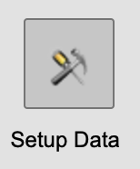
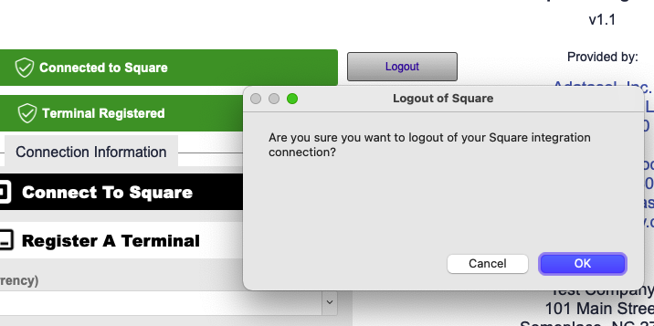
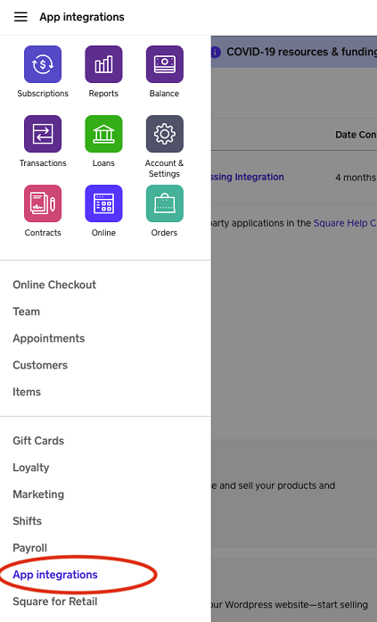
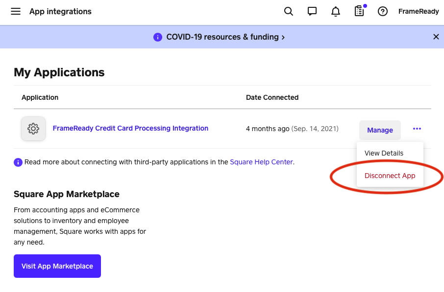
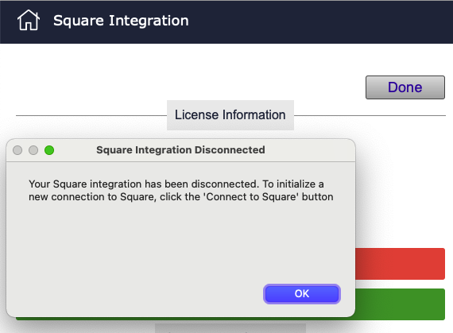

Disconnect your Square Integration
Use these steps when you need to manually refresh your Square login token.
-
Note: the Square Terminal cannot be used to place transactions while it is logged into FrameReady. Instead, hand-enter the transaction into FrameReady as a new Invoice.
Refresh Token
-
There are 2 ways that you can disconnect your Square account from your FrameReady if you were switching to a new Square account or just wanting to disconnect for other reasons. The first way you can disconnect your Square integration is to return to the Square settings page from Step 1 in the documentation. click on the Setup Data icon in the top navigation of the FrameReady Main Menu.

-
Once you have opened the Setup Data screen, navigate to the ‘Fiscal’ tab and you will see an option for ‘CC Payment Processing.’ Click on the button below for ‘Open Square Integration Settings’.
Directly to the right of the icon near the top that says ‘Connected to Square’ you will see a button that says ‘Logout’. If you click this button you will get a prompt asking you if you are sure you want to log out of your Square integration. Click ‘OK’ to continue and your Square account will be disconnected from FrameReady.

-
You can also disconnect your Square integration from within the Square online dashboard. If you login to your Square online dashboard and then in the left side navigation, select ‘App Integrations’ near the bottom of the list. After you are on the App Integrations page, look for ‘FrameReady Credit Card Processing Integration’ under ‘My Applications’.

-

-
Click on the 3 dots icons to the very far right of the Integration and then select the option ‘Disconnect App’. You will receive a prompt asking if you really want to disconnect the Application. Click to continue and then the application will become disconnected in FrameReady. If you have exited out of the Square Preferences page in FrameReady and are getting back in after disconnecting on the Square online dashboard, you will see a message letting you know that the integration was disconnected.

© 2023 Adatasol, Inc.